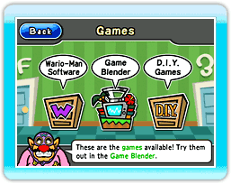
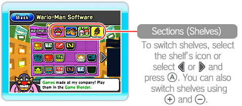
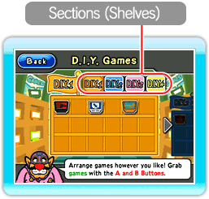
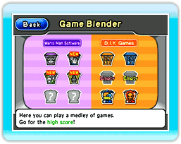
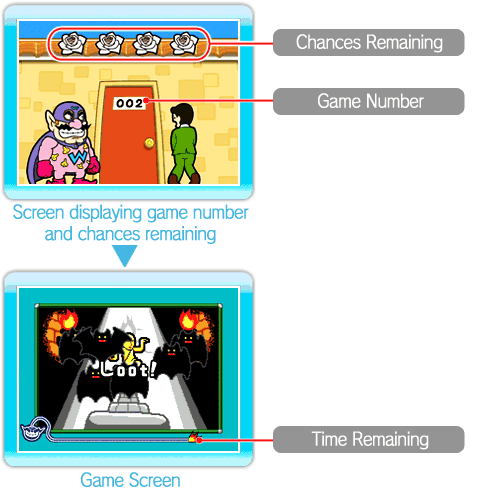

You can play games in the Games section of the Wario-Man Super Store.

● Games Menu
Point at any of the three menu options and press  .
.
·Wario-Man Software
Only games preloaded in WarioWare: D.I.Y. Showcase that you have already randomly played in the Game Blender are made available to play in the store. Select the game you want to play, then select  .
.

·D.I.Y. Games
This is where games received in the Distribution Center are stored. You can play them the same way you play Wario-Man Software games. Note that you can point at games and press +  to grab them and move them to different shelves or to different locations in the same shelf. You can store up to 72 games in D.I.Y. Games. To delete a game, select it, then select
to grab them and move them to different shelves or to different locations in the same shelf. You can store up to 72 games in D.I.Y. Games. To delete a game, select it, then select  .
.
*You cannot recover games that have been deleted.
·Game Blender
Here you can play all of your games, both the games that are preloaded into WarioWare: D.I.Y. Showcase and the games received via the Distribution Center. To play preloaded games, select Wario-Man Software. To play games received via the Distribution Center, select D.I.Y. Games.
Select a stage icon, then select .
*Wario-Man Software games that you play here will become available in the Wario-Man Software shelf for play at any time.
In addition, the Game Blender offers many other modes of play, as described below. These other modes are unlocked by filling up all the games in given Wario-Man Software sections or getting certain high scores, etc.
Wario-Man
Shuffle |
Wario-Man Software games are
all shuffled up in this stage!
|
Wario-Man
Ultra Hard! |
Wario-Man Software games are
pushed to ultra-speed here!
|
D.I.Y. Mix:
Shuffle |
Games from all D.I.Y. sections
are shuffled up here!
|
D.I.Y. Mix:
Ultra Hard! |
Games from all D.I.Y. sections
are pushed to ultra-speed here!
|
Mix All:
Shuffle |
This stage features games from
all sections, shuffled up.
|
Mix All:
Ultra Hard! |
This stage pushes games from
all sections to ultra-speed!
|
Mix All:
Versus |
Up to four players play head-to-head (additional accessories required and are sold separately). Each player selects a position on the screen, and when your position lights up, you have to win the game. (Warning: Other players can also control your game!) It's game over if you lose four times. The last player left wins.
|
● How to Play Games
First, the number of chances remaining and game number are displayed, and then the game begins. Point to the correct place and press within the time limit. If you make a mistake or time runs out, your chances remaining will decrease by one. Your game will be over when your chances remaining reach zero. The time remaining in each game is indicated by the bomb fuse at the bottom of the screen.
*Depending on the shelf or style of play, the chances remaining, number of games, and game-screen display may change.

·Boss Level
Once you've advanced through a certain number of games, a boss level will appear. If you clear the boss level, your chances remaining will increase by one.